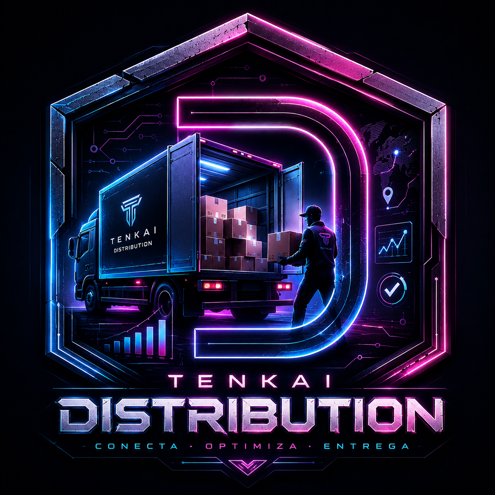
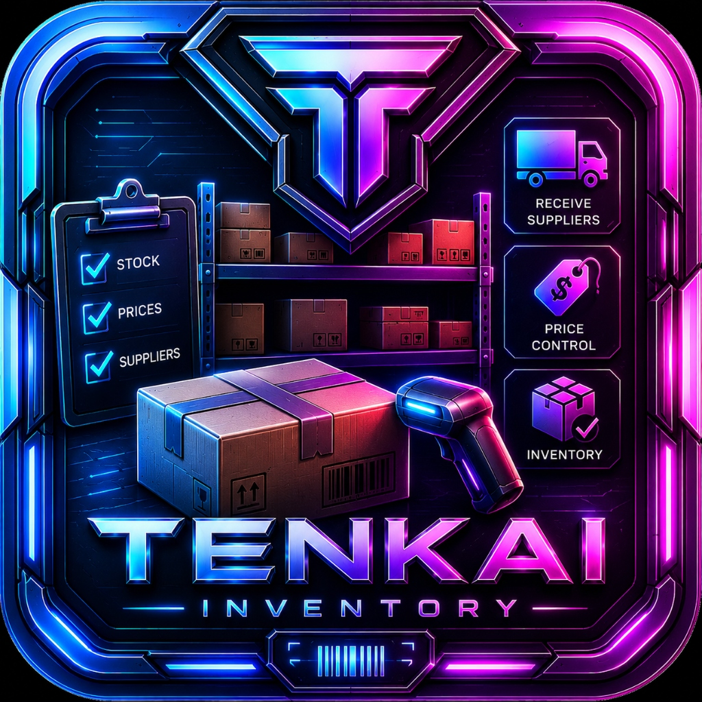
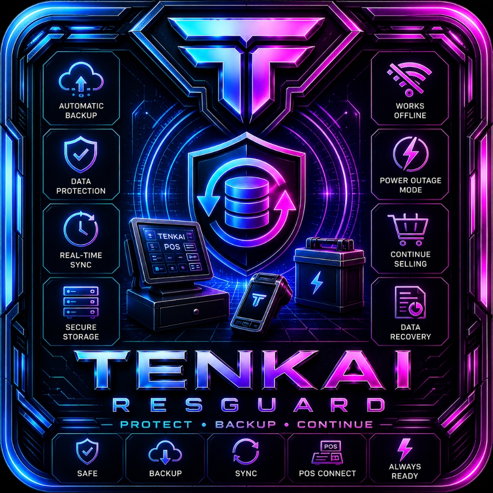
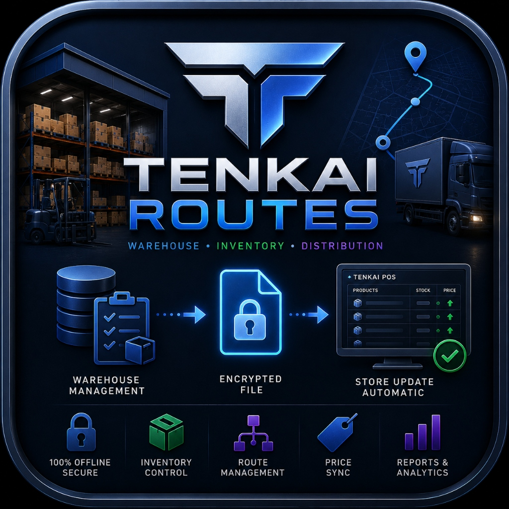
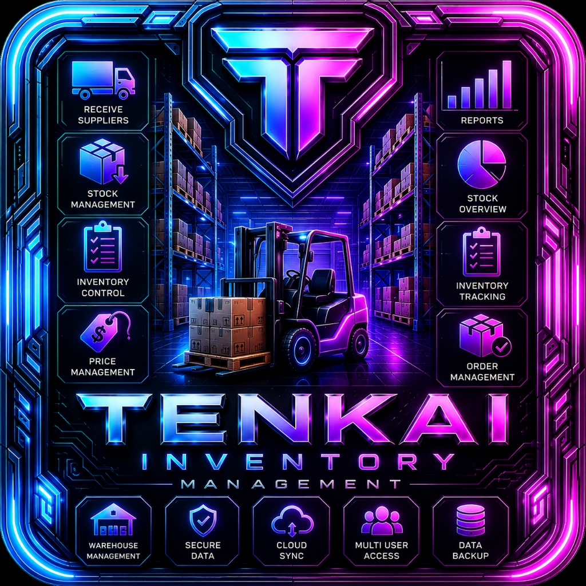
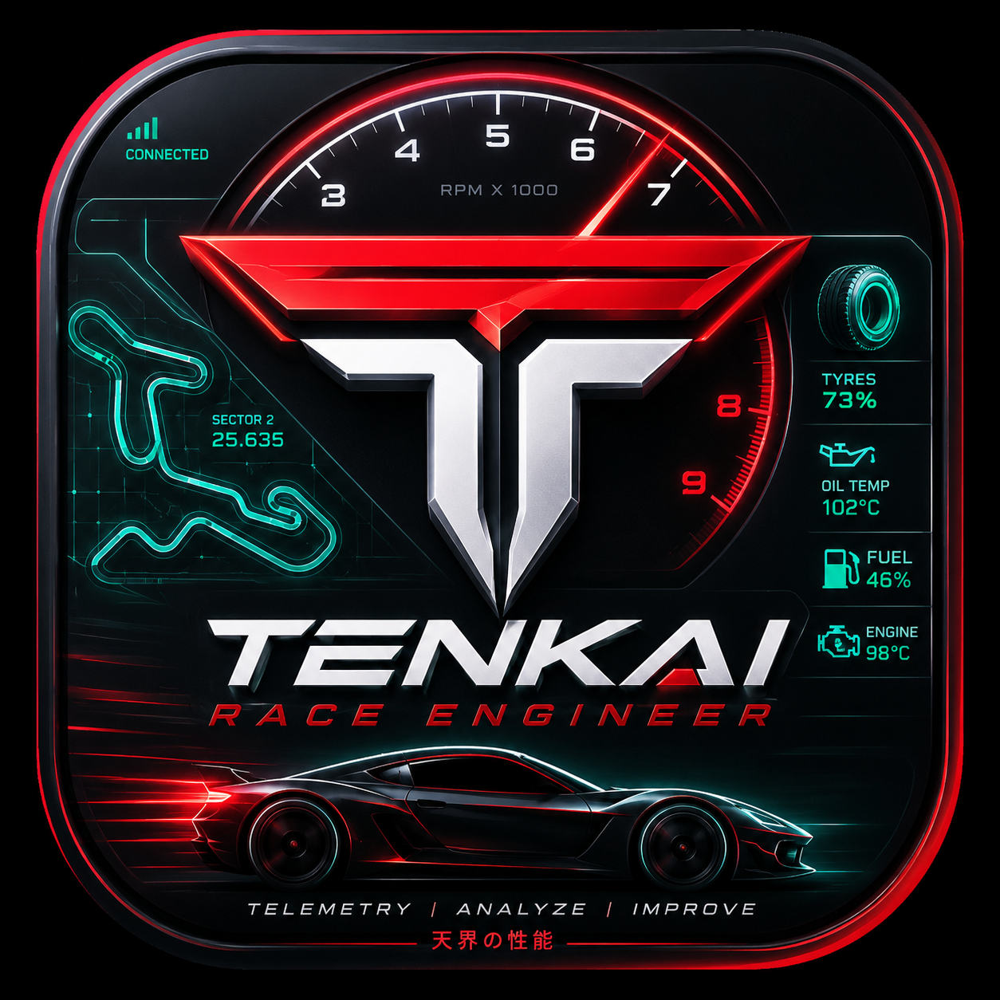

Gratis (Compras Integradas)
Tenkai Calculator 3D
Herramienta completa para makers en el día a día. Cotiza impresiones (filamento y resina) evaluando energía, desgaste de equipo, mantenimientos, mermas reales y tus márgenes de ganancia. Genera cotizaciones en PDF al instante.
MakersResina & FilamentoMárgenes CustomPDFs

Próximamente (De Pago)
Tenkai Forge Suite
La suite suprema para talleres en crecimiento. Gestiona filamento, resina, láser y router. Maneja impresoras para multitrabajos, catálogos, finanzas, inventario detallado y PDFs premium. Todo con una renovada interfaz estilo Tenkai Food.
Gestión TotalLáser & CNCFinanzasCatálogos
Pago + suscripción
Tenkai Forge Suite Pro
Arquitectura Host + Client para talleres y equipos. El host controla permisos, usuarios, facturas y sincronización local.
Host localClientes limitadosPermisosOffline

De pago
Tenkai Distribution
Sistema esencial para proveedores y repartidores independientes: registra entregas, devoluciones, dinero esperado y reportes rápidos.
ProveedoresVentasDevolucionesReportes
Suscripción o Pago Único
Tenkai Distribution Pro
Solución avanzada offline para proveedores en crecimiento. Controla inventarios, despacha múltiples rutas y obtén auditorías exactas de ventas, devoluciones y mermas por repartidor sin depender de internet.
Gestión de RutasControl OfflineAuditoría Exacta

Ecosistema Principal
Tenkai POS
La cúspide de ecosistemas en puntos de venta. Control total de ventas, caja, inventario y clientes. Operación 100% offline, licencias de por vida y arquitectura extensible.
Punto de VentaWindows & AndroidControl TotalSin Licencia Anual

Extensión Tenkai POS
Tenkai MultiPOS
Terminales secundarias de cobro en red local. Conecta múltiples cajas simultáneas con sincronización en tiempo real, cobro acelerado y flujo multicajero.
Multi-TerminalRed LocalVenta RápidaMulti-Cajero

Heredada Tenkai POS
Tenkai Inventory
Aplicación dedicada para el control de stock, recepción de proveedores, auditoría física de pasillos, ajuste de precios y escaneo de mercancía sin interrumpir la caja.
Control de StockProveedoresPreciosEscáner Móvil

Seguridad & Continuidad
Tenkai Resguard
Módulo de protección de datos y continuidad operativa. Ofrece respaldos automáticos, sincronización offline, modo apagón (Power Outage Mode) y recuperación instantánea.
Backup AutomáticoModo ApagónWorks OfflineData Recovery

Nivel Logística Empresarial
Tenkai Routes
Sistema descentralizado 100% offline para bodegas centrales y sucursales. Controla inventarios, rutas físicas de despacho y auditorías infalibles con archivos cifrados.
BodegasLogística de RutasArchivo Cifrado100% Offline

Extensión Tenkai Routes
Tenkai Inventory Management
Aplicación móvil especializada de gestión de almacén para Tenkai Routes. Rastrea inventarios en bodega, recepción de proveedores, órdenes y movimientos de camionetas.
WarehouseProveedoresOrdersStock Overview
De Pago (~$60 MXN)
Tenkai Music
Reproductor y gestor de música/video con metadatos y arte original para sumergirte en las bandas sonoras del dominio Tenkai.
MúsicaVideoAtmósferas

De Pago (~$300 MXN)
Tenkai Race Engineer
El ingeniero de pista definitivo. Consejos y telemetría en tiempo real (GT7 y más). Autodetecta coches, circuitos y genera mapas desde cero para darte la ventaja competitiva total.
Telemetría AvanzadaGT7Ingeniero IAGeneración de Mapas
 TENKAI TENSHI
TENKAI TENSHI